新竹城隍廟/新竹市
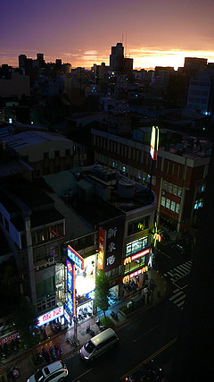
台湾のシリコンバレーと異名をとる新竹市
でも新竹の異名といえばやっぱり風城の方がしっくりする。
そんな新竹の街に日が沈む。
さて、夕飯だ。
新竹といえば何をさしおいてもビーフンを食さねばならぬだろう。
という訳で、ビーフンを食しに城隍廟へと向かう。
城隍廟とは道教の神さまのひとつで各都市の守り神である城隍神を祀る廟なのだ。
？？？何故に廟で飯？？？
…と思われる方もあるだろうが、ここ新竹の城隍廟は廟の周りにびっしり食い物屋が並んでいるというのだ。
実際行ってみてビックリ。
廟の前に屋台が並んでいるのか、と思っていたらとんでもない。
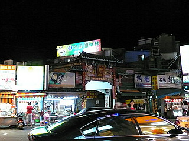 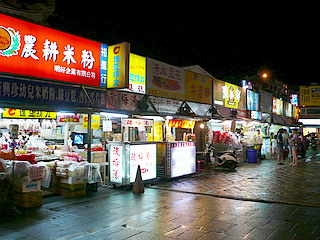
城隍廟自体が屋台の群れに埋まっているのだ。
元々門前市が肥大化して廟自体を飲み込んでしまったのだろう。
それほど人が集まる＝信仰されている廟なのだ。
聞くところによると中華世界でも屈指の城隍廟だとか。
…飯を食いに来たとはいえそこは珍寺修行の場。
心静かに歩を進め、帽子を取り、一礼をして中に入ったら…
…全然普通の屋台街じゃないっすか…
え〜。修行中の身なれど、腹が減ったのでまずは食事の方を済ませておきましょう。
典座、じゃなくて屋台を歩いているだけで雲水、じゃなくてランニングを着たおっさんが私をぴったりマンマーク。
促されるまま、なされるがままに席に着きビーフンその他諸々を注文。
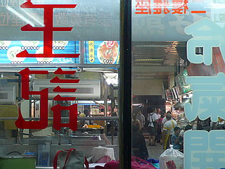
ビーフンは良かったけど牡蠣玉子のピンクソースかけはチョット…
修行中の身ではあるが、さすがにピンクソースまではタクアンですくって食すまでには至りませんでした。
席から見る限りここのどこが城隍廟なんだか判らない。台湾のどこにでもある屋台街にしか見えないんですけど。
そこそこ腹を満たしてから城隍廟を探す。
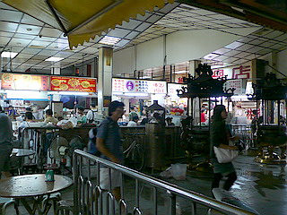
鉄柵で囲われた部分が廟内である。
最初、あまりにも唐突すぎてそこに廟があることすら判らなかった。
下手すりゃ料理を注文して出来上がってくる間に参拝できそうな近さ。
でもそこは台湾屈指の城隍廟。内部に入ると外界の湯気と呼び込みの怒声が渦巻く喧騒とは無縁の厳かさに満ちていた。
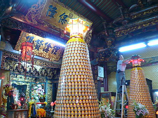
城隍神といえば城市の守り神であると同時に死者を裁く裁判官でもある。
様々な城隍神の使いがガラスケースに納まっていた。
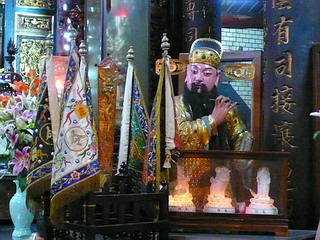 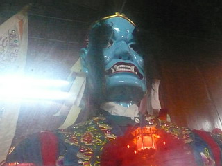
その代表、謝将軍。ベロベロベ〜な長い舌がチャームポイント。
ウソをつくと舌を抜かれるぞ！なんてのはこの辺から来てるのだろうか?
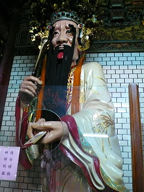 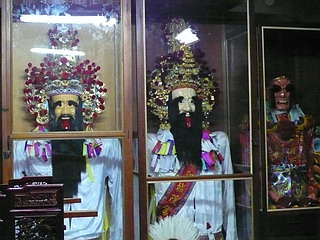
謝将軍の相棒范将軍か。
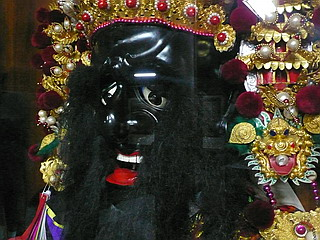
こちらは誰でしょう？
頭の上に馬らしきモノを被っている。
仏教の牛頭馬頭みたいなものだろうか？確か道教では牛爺・馬爺というそうだが…
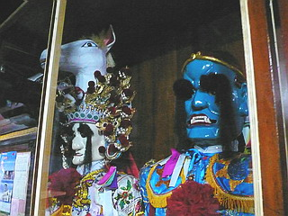
これらは人が装着出来るようになっているので、祭りに人が着用するのかもしれない。
おお、かつて万福寺でお会いした陰陽官サマ！
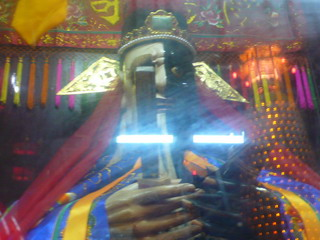
（蛍光灯が映り込んじゃってスミマセン）
相変わらずのアシュラ男爵っぷりで。
夜という事もあって参拝者はあまり多くなかった。
廟の片隅には参拝客がセルフで飲めるように冷たいお茶が入ったタンクが。
ピンクソースかけのおかげで口腔内にピンク味が広がりまくっていたので遠慮なく一杯いただく。
…ぬる〜い…
隣には付属の仏教コーナーがあった。
中央にいるのは弥勒菩薩。布袋さんそっくりだが、弥勒菩薩なのだ。
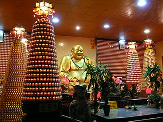 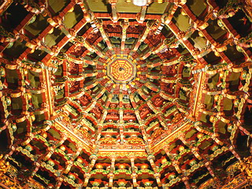
飯を食いに行っても気の抜けない街、新竹の夜なのである。
次のお寺にGO！
台湾大佛列伝3
珍寺大道場 HOME